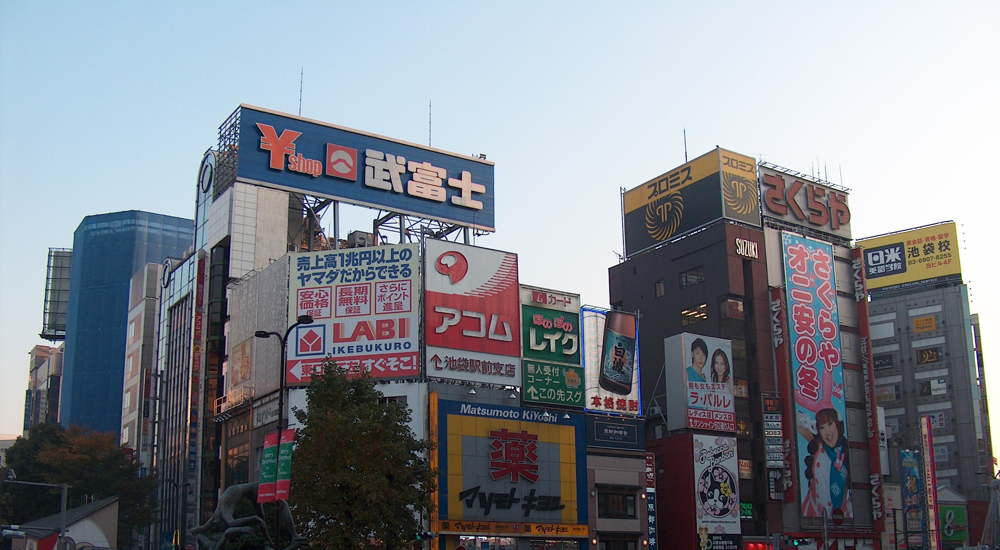

Anime
Since anime is such a big part of Japanese culture, Tokyo has also been influenced by it to the point where anime is all over the place.
Ikebukuro: With Ikebukuro being one of the biggest otaku districts in Tokyo, it has two seperate anime stores, one where you would find merchandise you would expect to be there and the other exclusive for cosplay and a cafe.
Akihabara: Akihabara also known as the Electric town of Tokyo, is without a doubt the center of anime culture in japan. Most major anime, manga and gaming stores have a branch here.